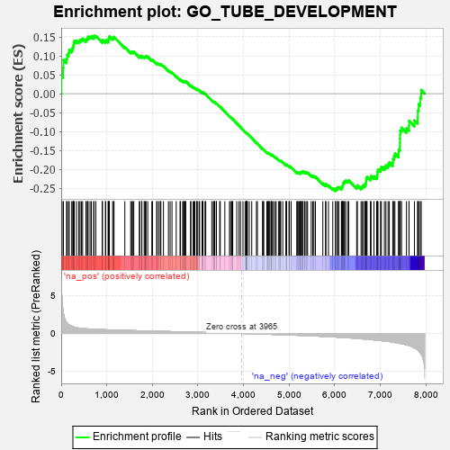
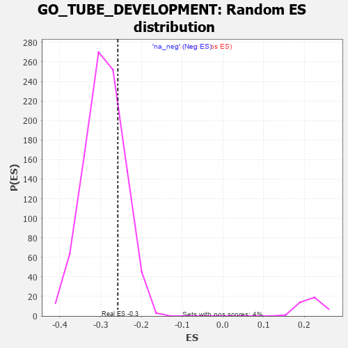

| | | Dataset | 7d |
| Phenotype | NoPhenotypeAvailable |
| Upregulated in class | na_neg |
| GeneSet | GO_TUBE_DEVELOPMENT |
| Enrichment Score (ES) | -0.2577928 |
| Normalized Enrichment Score (NES) | -0.8851226 |
| Nominal p-value | 0.7612096 |
| FDR q-value | 0.96218544 |
| FWER p-Value | 1.0 |
Table: GSEA Results Summary

Fig 1: Enrichment plot: GO_TUBE_DEVELOPMENT
Profile of the Running ES Score & Positions of GeneSet Members on the Rank Ordered List
| PROBE | GENE SYMBOL | GENE_TITLE | RANK IN GENE LIST | RANK METRIC SCORE | RUNNING ES | CORE ENRICHMENT | | 1 | ST14 | | | 7 | 5.713 | 0.0464 | No |
| 2 | SIX2 | | | 40 | 3.152 | 0.0684 | No |
| 3 | TGFB3 | | | 49 | 2.654 | 0.0893 | No |
| 4 | EMX2 | | | 117 | 1.451 | 0.0927 | No |
| 5 | SP3 | | | 131 | 1.391 | 0.1025 | No |
| 6 | SPI1 | | | 162 | 1.182 | 0.1084 | No |
| 7 | FOXF1 | | | 176 | 1.136 | 0.1162 | No |
| 8 | SMAD5 | | | 231 | 0.979 | 0.1173 | No |
| 9 | LBX1 | | | 254 | 0.929 | 0.1222 | No |
| 10 | TBX20 | | | 267 | 0.880 | 0.1279 | No |
| 11 | HGF | | | 276 | 0.870 | 0.1341 | No |
| 12 | SHOX2 | | | 288 | 0.842 | 0.1396 | No |
| 13 | DLL1 | | | 337 | 0.760 | 0.1397 | No |
| 14 | BAX | | | 387 | 0.711 | 0.1393 | No |
| 15 | ALX4 | | | 413 | 0.686 | 0.1417 | No |
| 16 | SUFU | | | 443 | 0.665 | 0.1435 | No |
| 17 | LRP1 | | | 470 | 0.648 | 0.1455 | No |
| 18 | SRF | | | 542 | 0.615 | 0.1414 | No |
| 19 | JMJD6 | | | 553 | 0.613 | 0.1452 | No |
| 20 | CCNB1 | | | 581 | 0.601 | 0.1467 | No |
| 21 | ALX1 | | | 590 | 0.598 | 0.1506 | No |
| 22 | GLMN | | | 632 | 0.583 | 0.1502 | No |
| 23 | HES5 | | | 661 | 0.571 | 0.1513 | No |
| 24 | VASH1 | | | 712 | 0.556 | 0.1494 | No |
| 25 | ID1 | | | 719 | 0.555 | 0.1532 | No |
| 26 | ZIC3 | | | 760 | 0.542 | 0.1526 | No |
| 27 | HDAC5 | | | 900 | 0.506 | 0.1388 | No |
| 28 | STOX1 | | | 905 | 0.506 | 0.1425 | No |
| 29 | DVL3 | | | 971 | 0.490 | 0.1381 | No |
| 30 | WDR48 | | | 975 | 0.489 | 0.1418 | No |
| 31 | REC8 | | | 1028 | 0.478 | 0.1390 | No |
| 32 | AKT1 | | | 1040 | 0.476 | 0.1416 | No |
| 33 | YAP1 | | | 1041 | 0.475 | 0.1455 | No |
| 34 | MEF2C | | | 1054 | 0.473 | 0.1479 | No |
| 35 | RBM15 | | | 1057 | 0.473 | 0.1515 | No |
| 36 | SRC | | | 1128 | 0.459 | 0.1463 | No |
| 37 | MTSS1 | | | 1149 | 0.454 | 0.1475 | No |
| 38 | GAB1 | | | 1158 | 0.453 | 0.1502 | No |
| 39 | SSBP3 | | | 1396 | 0.411 | 0.1230 | No |
| 40 | LIAS | | | 1524 | 0.387 | 0.1098 | No |
| 41 | SOS1 | | | 1547 | 0.384 | 0.1101 | No |
| 42 | FZD1 | | | 1574 | 0.379 | 0.1099 | No |
| 43 | NPRL3 | | | 1592 | 0.375 | 0.1108 | No |
| 44 | PLOD3 | | | 1715 | 0.353 | 0.0980 | No |
| 45 | MEIS1 | | | 1723 | 0.351 | 0.1000 | No |
| 46 | AGO2 | | | 1767 | 0.343 | 0.0973 | No |
| 47 | LRP5 | | | 1769 | 0.342 | 0.1000 | No |
| 48 | SGPL1 | | | 1820 | 0.334 | 0.0963 | No |
| 49 | GATA4 | | | 1837 | 0.330 | 0.0970 | No |
| 50 | TCF7 | | | 1848 | 0.328 | 0.0984 | No |
| 51 | SMAD4 | | | 1860 | 0.326 | 0.0997 | No |
| 52 | SIM1 | | | 1898 | 0.321 | 0.0976 | No |
| 53 | CIC | | | 1988 | 0.307 | 0.0886 | No |
| 54 | FOXO4 | | | 2004 | 0.304 | 0.0892 | No |
| 55 | FOXD1 | | | 2093 | 0.292 | 0.0802 | No |
| 56 | BMP7 | | | 2107 | 0.290 | 0.0810 | No |
| 57 | ATOH8 | | | 2145 | 0.285 | 0.0785 | No |
| 58 | DDR1 | | | 2176 | 0.280 | 0.0770 | No |
| 59 | SYK | | | 2186 | 0.278 | 0.0781 | No |
| 60 | CREB1 | | | 2243 | 0.269 | 0.0731 | No |
| 61 | BCAS3 | | | 2352 | 0.253 | 0.0613 | No |
| 62 | HIPK2 | | | 2389 | 0.247 | 0.0587 | No |
| 63 | MET | | | 2430 | 0.240 | 0.0555 | No |
| 64 | SALL4 | | | 2523 | 0.223 | 0.0455 | No |
| 65 | EMC10 | | | 2607 | 0.211 | 0.0365 | No |
| 66 | VAV3 | | | 2614 | 0.210 | 0.0375 | No |
| 67 | ARID2 | | | 2664 | 0.204 | 0.0328 | No |
| 68 | SASH1 | | | 2682 | 0.201 | 0.0323 | No |
| 69 | KDM6A | | | 2690 | 0.200 | 0.0331 | No |
| 70 | PHB2 | | | 2712 | 0.197 | 0.0320 | No |
| 71 | SLIT2 | | | 2724 | 0.195 | 0.0322 | No |
| 72 | RORA | | | 2730 | 0.193 | 0.0331 | No |
| 73 | PHF14 | | | 2838 | 0.178 | 0.0208 | No |
| 74 | NR2E1 | | | 2844 | 0.177 | 0.0216 | No |
| 75 | FGFR2 | | | 2895 | 0.167 | 0.0165 | No |
| 76 | AGGF1 | | | 2911 | 0.164 | 0.0160 | No |
| 77 | ACVR1 | | | 2932 | 0.161 | 0.0147 | No |
| 78 | SHB | | | 2974 | 0.154 | 0.0107 | No |
| 79 | RNH1 | | | 2977 | 0.153 | 0.0117 | No |
| 80 | PCSK5 | | | 2983 | 0.152 | 0.0123 | No |
| 81 | WNT4 | | | 3023 | 0.146 | 0.0085 | No |
| 82 | LEF1 | | | 3037 | 0.144 | 0.0080 | No |
| 83 | TIGAR | | | 3091 | 0.138 | 0.0023 | No |
| 84 | LHX3 | | | 3092 | 0.138 | 0.0034 | No |
| 85 | AIMP1 | | | 3105 | 0.136 | 0.0030 | No |
| 86 | GPX1 | | | 3109 | 0.135 | 0.0038 | No |
| 87 | SFRP5 | | | 3154 | 0.129 | -0.0009 | No |
| 88 | PAX6 | | | 3170 | 0.127 | -0.0017 | No |
| 89 | SMAD3 | | | 3303 | 0.105 | -0.0179 | No |
| 90 | SMAD1 | | | 3337 | 0.099 | -0.0214 | No |
| 91 | TAB1 | | | 3351 | 0.097 | -0.0222 | No |
| 92 | FMN1 | | | 3363 | 0.095 | -0.0229 | No |
| 93 | SMAD7 | | | 3369 | 0.093 | -0.0227 | No |
| 94 | YIPF6 | | | 3404 | 0.089 | -0.0264 | No |
| 95 | MED1 | | | 3405 | 0.089 | -0.0257 | No |
| 96 | HGS | | | 3476 | 0.080 | -0.0340 | No |
| 97 | GLI1 | | | 3489 | 0.079 | -0.0349 | No |
| 98 | MAPK3 | | | 3589 | 0.062 | -0.0472 | No |
| 99 | EPN2 | | | 3691 | 0.045 | -0.0599 | No |
| 100 | NF1 | | | 3713 | 0.040 | -0.0622 | No |
| 101 | FMNL3 | | | 3739 | 0.036 | -0.0652 | No |
| 102 | VPS52 | | | 3758 | 0.033 | -0.0672 | No |
| 103 | SKI | | | 3762 | 0.032 | -0.0673 | No |
| 104 | ITPK1 | | | 3851 | 0.020 | -0.0785 | No |
| 105 | NIPBL | | | 3900 | 0.010 | -0.0846 | No |
| 106 | CCM2 | | | 3933 | 0.005 | -0.0887 | No |
| 107 | EYA1 | | | 3987 | -0.006 | -0.0955 | No |
| 108 | VEZF1 | | | 4033 | -0.013 | -0.1012 | No |
| 109 | DDAH1 | | | 4056 | -0.016 | -0.1039 | No |
| 110 | TAL1 | | | 4064 | -0.018 | -0.1047 | No |
| 111 | SFRP2 | | | 4065 | -0.018 | -0.1045 | No |
| 112 | ROBO2 | | | 4066 | -0.018 | -0.1044 | No |
| 113 | CSF1 | | | 4074 | -0.019 | -0.1051 | No |
| 114 | WNT2 | | | 4084 | -0.021 | -0.1061 | No |
| 115 | ABL1 | | | 4125 | -0.027 | -0.1111 | No |
| 116 | PDX1 | | | 4179 | -0.038 | -0.1176 | No |
| 117 | WNT11 | | | 4282 | -0.056 | -0.1303 | No |
| 118 | TBX2 | | | 4303 | -0.060 | -0.1324 | No |
| 119 | RALA | | | 4416 | -0.079 | -0.1462 | No |
| 120 | MYDGF | | | 4429 | -0.081 | -0.1470 | No |
| 121 | SETD2 | | | 4443 | -0.084 | -0.1480 | No |
| 122 | ILK | | | 4510 | -0.096 | -0.1558 | No |
| 123 | RIN2 | | | 4535 | -0.101 | -0.1580 | No |
| 124 | AAMP | | | 4539 | -0.103 | -0.1576 | No |
| 125 | NTRK2 | | | 4543 | -0.104 | -0.1571 | No |
| 126 | BAG6 | | | 4563 | -0.108 | -0.1586 | No |
| 127 | CMA1 | | | 4580 | -0.114 | -0.1598 | No |
| 128 | ADTRP | | | 4612 | -0.120 | -0.1628 | No |
| 129 | GATA3 | | | 4614 | -0.120 | -0.1619 | No |
| 130 | DLG5 | | | 4619 | -0.121 | -0.1614 | No |
| 131 | MYLK | | | 4651 | -0.128 | -0.1644 | No |
| 132 | PTK7 | | | 4687 | -0.136 | -0.1677 | No |
| 133 | LHX2 | | | 4716 | -0.143 | -0.1702 | No |
| 134 | PLCG1 | | | 4770 | -0.151 | -0.1758 | No |
| 135 | SRPK2 | | | 4790 | -0.155 | -0.1769 | No |
| 136 | TERT | | | 4801 | -0.157 | -0.1769 | No |
| 137 | FBXW7 | | | 4816 | -0.161 | -0.1774 | No |
| 138 | DLG1 | | | 4860 | -0.169 | -0.1815 | No |
| 139 | ATRX | | | 4929 | -0.184 | -0.1888 | No |
| 140 | FZD4 | | | 4940 | -0.186 | -0.1885 | No |
| 141 | EP300 | | | 4941 | -0.186 | -0.1870 | No |
| 142 | PROM1 | | | 4996 | -0.197 | -0.1923 | No |
| 143 | KLF4 | | | 5005 | -0.198 | -0.1917 | No |
| 144 | PDPK1 | | | 5043 | -0.207 | -0.1948 | No |
| 145 | TBX1 | | | 5166 | -0.241 | -0.2085 | No |
| 146 | PARVA | | | 5187 | -0.245 | -0.2091 | No |
| 147 | SMO | | | 5195 | -0.247 | -0.2080 | No |
| 148 | GPR4 | | | 5219 | -0.250 | -0.2089 | No |
| 149 | KRIT1 | | | 5248 | -0.257 | -0.2104 | No |
| 150 | FOXJ2 | | | 5249 | -0.257 | -0.2082 | No |
| 151 | PTEN | | | 5262 | -0.261 | -0.2076 | No |
| 152 | EPHA4 | | | 5273 | -0.265 | -0.2067 | No |
| 153 | FKBP8 | | | 5296 | -0.270 | -0.2073 | No |
| 154 | EPN1 | | | 5304 | -0.272 | -0.2060 | No |
| 155 | TCF21 | | | 5340 | -0.283 | -0.2081 | No |
| 156 | EPHA1 | | | 5349 | -0.285 | -0.2068 | No |
| 157 | FZD5 | | | 5386 | -0.292 | -0.2090 | No |
| 158 | SOX8 | | | 5404 | -0.296 | -0.2088 | No |
| 159 | STIL | | | 5483 | -0.314 | -0.2162 | No |
| 160 | VDR | | | 5517 | -0.325 | -0.2178 | No |
| 161 | FGFR1 | | | 5543 | -0.332 | -0.2183 | No |
| 162 | SPHK1 | | | 5576 | -0.339 | -0.2196 | No |
| 163 | PDCL3 | | | 5738 | -0.388 | -0.2372 | No |
| 164 | ADA | | | 5798 | -0.405 | -0.2415 | No |
| 165 | BBS4 | | | 5806 | -0.407 | -0.2390 | No |
| 166 | BBS5 | | | 5862 | -0.421 | -0.2426 | No |
| 167 | PRDM1 | | | 5956 | -0.457 | -0.2508 | No |
| 168 | XBP1 | | | 6011 | -0.475 | -0.2539 | Yes |
| 169 | PRKX | | | 6016 | -0.477 | -0.2504 | Yes |
| 170 | FZD8 | | | 6051 | -0.490 | -0.2508 | Yes |
| 171 | JAG1 | | | 6060 | -0.494 | -0.2477 | Yes |
| 172 | UBB | | | 6090 | -0.503 | -0.2473 | Yes |
| 173 | STK4 | | | 6145 | -0.518 | -0.2500 | Yes |
| 174 | ROCK1 | | | 6152 | -0.520 | -0.2464 | Yes |
| 175 | STIM1 | | | 6169 | -0.528 | -0.2441 | Yes |
| 176 | THRB | | | 6178 | -0.531 | -0.2408 | Yes |
| 177 | KLF2 | | | 6182 | -0.532 | -0.2368 | Yes |
| 178 | MYO1E | | | 6200 | -0.537 | -0.2345 | Yes |
| 179 | SMAD2 | | | 6216 | -0.541 | -0.2320 | Yes |
| 180 | CDC42 | | | 6236 | -0.548 | -0.2299 | Yes |
| 181 | IFT52 | | | 6280 | -0.566 | -0.2307 | Yes |
| 182 | IFT57 | | | 6307 | -0.579 | -0.2293 | Yes |
| 183 | DYSF | | | 6481 | -0.654 | -0.2462 | Yes |
| 184 | LAMA1 | | | 6496 | -0.659 | -0.2426 | Yes |
| 185 | ROBO1 | | | 6577 | -0.699 | -0.2471 | Yes |
| 186 | MKS1 | | | 6607 | -0.715 | -0.2449 | Yes |
| 187 | WWTR1 | | | 6631 | -0.729 | -0.2419 | Yes |
| 188 | TMED2 | | | 6665 | -0.746 | -0.2400 | Yes |
| 189 | VASH2 | | | 6680 | -0.752 | -0.2355 | Yes |
| 190 | SAT1 | | | 6688 | -0.756 | -0.2302 | Yes |
| 191 | PAK1 | | | 6691 | -0.757 | -0.2242 | Yes |
| 192 | EGFR | | | 6708 | -0.765 | -0.2199 | Yes |
| 193 | C2CD3 | | | 6783 | -0.802 | -0.2228 | Yes |
| 194 | WDR19 | | | 6796 | -0.812 | -0.2176 | Yes |
| 195 | AHI1 | | | 6860 | -0.848 | -0.2187 | Yes |
| 196 | CSPG4 | | | 6918 | -0.878 | -0.2188 | Yes |
| 197 | MIB1 | | | 6932 | -0.890 | -0.2132 | Yes |
| 198 | GHSR | | | 6937 | -0.894 | -0.2063 | Yes |
| 199 | FAT4 | | | 6948 | -0.901 | -0.2001 | Yes |
| 200 | CCR2 | | | 7003 | -0.939 | -0.1993 | Yes |
| 201 | NR4A1 | | | 7022 | -0.951 | -0.1937 | Yes |
| 202 | BBS7 | | | 7089 | -0.988 | -0.1941 | Yes |
| 203 | PTPRB | | | 7122 | -1.010 | -0.1898 | Yes |
| 204 | AR | | | 7169 | -1.046 | -0.1871 | Yes |
| 205 | OVOL2 | | | 7197 | -1.068 | -0.1818 | Yes |
| 206 | QKI | | | 7272 | -1.145 | -0.1818 | Yes |
| 207 | CIB1 | | | 7280 | -1.152 | -0.1732 | Yes |
| 208 | MSX2 | | | 7299 | -1.171 | -0.1658 | Yes |
| 209 | GRN | | | 7319 | -1.194 | -0.1584 | Yes |
| 210 | CELA1 | | | 7399 | -1.265 | -0.1581 | Yes |
| 211 | LOXL2 | | | 7403 | -1.269 | -0.1480 | Yes |
| 212 | KLF5 | | | 7429 | -1.304 | -0.1404 | Yes |
| 213 | OTC | | | 7430 | -1.305 | -0.1296 | Yes |
| 214 | LHX1 | | | 7431 | -1.305 | -0.1188 | Yes |
| 215 | MMP19 | | | 7433 | -1.309 | -0.1081 | Yes |
| 216 | SPDEF | | | 7436 | -1.313 | -0.0975 | Yes |
| 217 | NPY | | | 7465 | -1.356 | -0.0899 | Yes |
| 218 | TRAF4 | | | 7573 | -1.514 | -0.0911 | Yes |
| 219 | PKD1 | | | 7628 | -1.611 | -0.0848 | Yes |
| 220 | PDCD6 | | | 7630 | -1.615 | -0.0715 | Yes |
| 221 | CASP3 | | | 7747 | -1.902 | -0.0708 | Yes |
| 222 | TRAF6 | | | 7818 | -2.157 | -0.0619 | Yes |
| 223 | PKD2 | | | 7822 | -2.167 | -0.0444 | Yes |
| 224 | SP1 | | | 7840 | -2.321 | -0.0273 | Yes |
| 225 | MMP2 | | | 7875 | -2.574 | -0.0104 | Yes |
| 226 | CAV3 | | | 7896 | -2.739 | 0.0097 | Yes |
Table: GSEA details [plain text format]

Fig 2: GO_TUBE_DEVELOPMENT: Random ES distribution
Gene set null distribution of ES for GO_TUBE_DEVELOPMENT